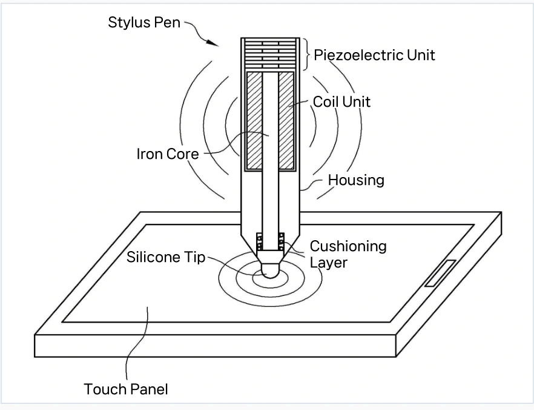
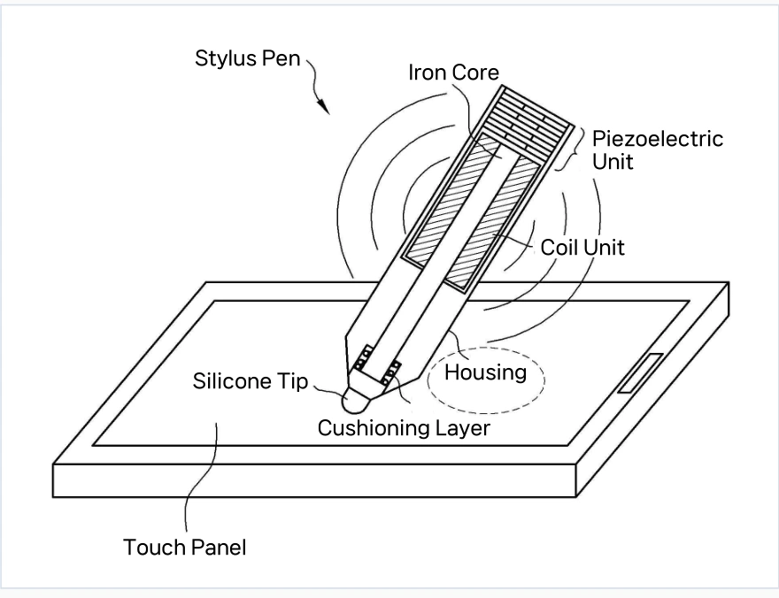

Utility model / 20-0485653
Battery-less Smart Stylus
A stylus concept that converts writing pressure into magnetic signals for pressure and tilt input, without an internal battery.
- Type
- Utility model
- Registration no.
- 20-0485653
- Registered title
- Stylus Pen
- Registration record
- View on KIPRIS DOI
- Project status
- Registered concept
Using the energy of writing
I proposed a stylus that uses the force applied while writing to generate a signal. Piezoelectric elements inside the pen convert this force into electricity, which drives a coil to produce a magnetic field.
The receiving device would interpret changes in the field to estimate writing pressure and pen tilt. The concept aims to support expressive input while reducing the need for charging and electronics inside the stylus.
{kind=link}

Proposed pressure and tilt sensing
Apply pressure through the tip
The silicone tip contacts the touch surface. An internal iron core transfers force to the piezoelectric layers.
Generate an electrical signal
The piezoelectric elements respond to the applied force. Their output passes through the internal coil.
Read the magnetic field
A magnetic sensor in the receiving device detects the resulting field. Field strength is used as a signal for writing pressure.
Estimate tilt
The relative position of the magnetic signal and the tip’s touch point is used to estimate the angle of the stylus.
{kind=link}

Development direction
This is a registered stylus concept. The drawings describe the proposed conversion from physical pressure to electrical and magnetic signals.
Further development would need to examine signal strength, sensor placement, and calibration in a physical prototype. One possible calibration method is to press the pen at predefined screen locations and record the magnetic response at each point.